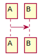

1 Basics
A MkTechDocs project comprises:
- A
master.mdfile - A
mktechdocs.conf - Any number of markdown files, images, scripts, and template files
2 Configuring your MkTechDocs project
The easiest way to learn how to configure a MkTechDocs project is by looking at the mktechdocs.conf file for this project. Here it is:
# The title of your final document
TITLE="Getting Started with MkTechDocs"
# Where MkTechDocs should put the built project. In this case, the output will be copied into "getting_started_pages". MkTechDocs appends "_pages" to avoid confusion.
OUTPUT_FILE_NAME_BASE=getting_started
# Here, select an output format:
#
# html: A single long html page with a toggle-able table of contents at the top
# htmlsimple: A single long html page with static table of contents at the top
# cssframes: Static table of contents on the left, scrollable content in the middle, static header and footer
# htmlmulti: Static landing page with static table of contents on the left. Each section has it's own separate HTML page.
# markdown: Collage everything in master.md into a single markdown file.
# docx: A standard Microsoft Word docx document.
# epub: A epub ebook
# epub3: A epub3 ebook
FORMAT=cssframes
# Select your style.
#
# archwiki: In the style of the Arch Linux Wiki
# github: Like GitHub documentation
# custom: Do your own thing. Start with the sample mktechdocs.css included in this project. Note that if you use this option you must provide a value for CUSTOM_CSS below.
HTML_STYLE=custom
# This controls how many levels of headings to include in the table of contents. Here, six levels of headers will be visible.
TABLE_OF_CONTENTS_MAIN_DEPTH=6
# This controls how many levels of headings to include in the table of contents on "sub" pages, which are only applicable when using the "htmlmulti" format.
TABLE_OF_CONTENTS_SUB_DEPTH=3
# If true, headers will automatically contain section numbers.
SECTION_NUMBERS=true
# Put all your images in the following directory so MkTechDocs knows to copy it into the output directory.
IMAGES=./images
# Use a build script to do things both before and after a build. MkTechDocs calls this script if present like:
#
# mybuildscript.sh pre
# mybuildscript.sh post
#
# A typical use of this script is to copy output to some other place like ~/public_html.
BUILD_SCRIPT=mybuildscript.sh
# If you use the "custom" HTML_STYLE, apply the following css file. Leave it empty to use the default.
CUSTOM_CSS=my.css
# You can use your own custom HTML template to build pages. Leave it empty to use a template consisten with FORMAT. This one is for demo purposes.
CUSTOM_TEMPLATE=mytemplate.html
# During the build, MkTechDocs creates many temporary files. You can set this to true if you want to understand why a build is failing.
KEEP_TEMP_FILES=false3 What is a master file?
MkTechDocs uses the concept of a "master document," which is nothing more than a normal markdown file that includes other markdown files. Every MkTechDocs project has a master.md file. Here is this project's master.md file, for example:
```comment
Use a heading-level of zero here because we want all major sections in
the document to be level 1.
```
```{.include heading-level=0}
basics.md
configuring.md
what-is-a-master.md
include-blocks.md
images.md
diagrams.md
templates.md
headers-and-footers.md
pdf-files.md
more-information.md
```
We'll get to include blocks next, but for now, just note that master.md serves as a mapping of which documents to include in your project and in which order.
4 Include blocks
You might be wondering if other markdown files can use include blocks. Yes! This is an important feature of MkTechDocs. MkTechDocs automatically figures out heading levels for an unlimited number of recursive includes.
It does this with a little clue from you. Here's what one looks like:
```{.include heading-level=1}
sub-directory/myincludedfile.md
```heading-level=1 tells MkTechDocs that at the point of the include, the current heading level is 1. When the file is included, MkTechDocs will automatically increase all the heading levels in the included document by 1 so that it fits nicely into the current document.
For the heading-level attribute to work correctly, all your project's sub documents should exist as standalone documents, starting with heading levels of 1.
# My sub document title
Some content
## A sub section
Some more contentIn this way, you can change the ordering in master.md and let MkTechDocs work out what the headings should be.
You've probably noticed that master.md uses heading-level=0. This means that MkTechDocs will include all the sub documents as is, with no changes to heading levels.
And here's what happens when you do the include above:
4.1 This heading is from the include file
This content is from an included file.
5 Images
Working with images in a MkTechDocs project is easy. Here's an example.
```
Please click to [the following link](images/smiley.png) to see a smiley.
Or let's include it inline with a title underneath:

```And here's what the code above looks like after rendering:
Please click the following link to see a smiley.
{kind=link}
Or let's include it inline with a title underneath:
Smiley
MkTechDocs will know to copy your images directory to the output directory when you specify the path in the mktechdocs.conf file.
6 Diagrams
MkTechDocs uses graphviz and plantuml to create and display messages. Here's a very simple example:
```plantuml
A->B
```Here's what MkTechDocs produces:

Read more about PlantUML here.
7 Templates
MkTechDocs supports 2 templating languages, Python (jinja2) and Groovy. Groovy templates are easier to write and understand, but they significantly slow down large builds. Jinja2 is much faster. Here you'll see an example of both.
To use a template, you create a file with a special extension:
- Groovy: some-template-name-1.gt
- Python: some-template-name-2.pyt
MkTechDocs renders these templates before it does anything (well, almost anything), so you can refer to them in your include blocks with a .md extension because that's what MkTechDocs produces from them. Continuing from the example above, you could include those rendered templates in your project like this:
```{.include heading-level=1}
some-template-name-1.md
some-template-name-2.md
````Let's start with a Groovy template.
7.1 Grovy templates
Groovy is not the most popular language, so you might be wondering why MkTechDocs supports it. MkTechDocs was built in part to support a much larger project for AT&T. One of the requirements was that the documentation system had to provide programmatic access to a large number of pre-existing java and Groovy libraries.
Here is a simple Groovy template, my-groovy-template.gt, included as a part of this project:
# My groovy template
This content is coming from a groovy template. Using templates, you can include logic in your documentation. Here is a silly counter to demonstrate the mechanics of using a groovy template:
<%
(1..10).each {
print "$it "
}
%>
That's it!
And here it is, rendered:
7.1.1 My groovy template
This content is coming from a groovy template. Using templates, you can include logic in your documentation. Here is a silly counter to demonstrate the mechanics of using a groovy template:
1 2 3 4 5 6 7 8 9 10
That's it!
For more information about groovy and pandoc integration, see this repository.
7.2 Python (Jinja2) templates
Using python templates is a little different. For these, you need to create 2 files. First, you create a *.pyt file. Here's what a Jinja2 python template looks like:
# My Jinja2 template
This is a Python Jinja2 template. It counts to 10.
{% for n in numbers %}
{{n}}
{% endfor %}
That's it!Next, you need a renderer file. Renderers are used to pass variables to Jinja2, which uses this map to fill in values. Here's one for this example:
#!/usr/bin/env python
import os
import sys
import glob
from mktechdocslib import get_comment_from_pythondoc_desc, render_mktechdocs_jinja2_template
##
# Create a simple renderer function that ouputs a template passed in on the
# command line with the given variable dictionary.
#
def render():
numbers = [1,2,3,4,5,6,7,8,9,10];
varDictionary = {"numbers":numbers}
if not os.path.isfile(sys.argv[1]):
sys.stderr.write("Cannot find " + sys.argv[1] + "\n")
sys.exit(1)
print render_mktechdocs_jinja2_template(sys.argv[1], varDictionary)
if __name__ == "__main__":
render()And here is how it renders:
7.3 My Jinja2 template
This is a Python Jinja2 template. It counts to 10.
1 2 3 4 5 6 7 8 9 10
That's it!
8 Headers and footers
If you have some content you'd like to appear at the top or bottom of your project, you can do so by including:
- header.html: for header content
- footer.html: for footer content
The contents should be HTML (please no setup like <html> or <body>, just the bits and pieces of HTML you need).
8.1 Headers and footers as templates
You can also use templates for rendering your header and footer. At this time, only Python Jinja2 templates are supported.
To create a footer template, for example, create a file called footer.htmlt (note the 't' on the end). Don't forget about the renderer. You'll also need one of those: footer.renderer.
Here is the content of this project's footer.htmlt:
<div align=center><p>© {{year}} Spencer Seidel</p></div>And here is the content of this project's footer.renderer:
#!/usr/bin/env python
import os
import sys
import glob
import datetime
from mktechdocslib import get_comment_from_pythondoc_desc, render_mktechdocs_jinja2_template
##
# Create a simple renderer function that ouputs a template passed in on the
# command line with the given variable dictionary.
#
def render():
now = datetime.datetime.now()
varDictionary = {"year":now.year}
if not os.path.isfile(sys.argv[1]):
sys.stderr.write("Cannot find " + sys.argv[1] + "\n")
sys.exit(1)
print render_mktechdocs_jinja2_template(sys.argv[1], varDictionary)
if __name__ == "__main__":
render()9 PDF files
The docker version of MkTechDocs does NOT support PDF generation. This is simply because doing so would make the already-huge docker image twice as large.
The good news is that MkTechDocs has robust support for producing PDFs thanks to Pandoc and XeLaTeX. To produce PDFs, you need to install MkTechDocs locally. Follow these instructions carefully. If you need Groovy support, you'll additionally need to follow these instructions.
You set some environment variables and then run an dependency-installation script appropriate for your architecture. Currently, there are scripts for Ubuntu (16.04 and 18.04), Arch Linux, Fedora, and macOS.
Warning: installation of the dependencies can trip up even seasoned techies, so you might want to take a look at what the script does before running it.
10 More information
For more information about using MkTechDocs, please see the usage guide.